21 Alternating currents
Sinusoidal supplies, r.m.s. values, rectification and smoothing
Learning objectives
By the end of this chapter, you should be able to:
- identify the period, frequency and peak value of an alternating current or voltage;
- use \(x=x_0\sin\omega t\) and \(\omega=2\pi f\);
- distinguish peak and root-mean-square values;
- calculate mean and peak power in a resistive load;
- recognise and sketch half-wave and full-wave rectified outputs;
- explain the operation of a single-diode rectifier and a bridge rectifier;
- explain capacitor smoothing and the effects of capacitance and load resistance.
21.1 Characteristics of alternating currents
Alternating current and voltage
An alternating current (a.c.) changes continuously in magnitude and reverses direction every half-cycle. An alternating voltage reverses polarity in the same way. A sinusoidal supply is represented by a sine curve centred on zero.
The peak value \(I_0\) or \(V_0\) is the maximum magnitude. The period \(T\) is the time for one complete cycle, and the frequency \(f\) is the number of cycles per second:
\[f=\frac{1}{T}.\]
Always convert graph time units to seconds before calculating frequency.
Sinusoidal representation
For a sinusoidal current or voltage,
\[I=I_0\sin(\omega t), \qquad V=V_0\sin(\omega t),\]
where \(\omega\) is angular frequency in \(\mathrm{rad\ s^{-1}}\):
\[\omega=2\pi f=\frac{2\pi}{T}.\]
The sign gives the instantaneous direction or polarity. Use radians when evaluating the sine function.
Root-mean-square values
The r.m.s. value of an alternating current is the value of a steady direct current that produces the same mean power in a resistor. The corresponding definition applies to voltage.
For a sinusoidal waveform,
\[I_{\mathrm{rms}}=\frac{I_0}{\sqrt2}, \qquad V_{\mathrm{rms}}=\frac{V_0}{\sqrt2}.\]
Thus an r.m.s. value is approximately \(0.707\) of its peak value. It is not the simple arithmetic mean of the positive and negative values, which would be zero over a complete cycle.
Power in a resistive load
The instantaneous power is always non-negative because \(P=I^2R=V^2/R\). For a sinusoidal supply,
\[P_{\mathrm{mean}}=I_{\mathrm{rms}}^2R =V_{\mathrm{rms}}I_{\mathrm{rms}} =\frac{V_{\mathrm{rms}}^2}{R}.\]
Since \(I_{\mathrm{rms}}=I_0/\sqrt2\) and \(V_{\mathrm{rms}}=V_0/\sqrt2\),
\[P_{\mathrm{mean}}=\frac12P_0.\]
The power waveform has twice the frequency of the current or voltage waveform: it reaches zero twice in each electrical cycle.
21.2 Rectification and smoothing
Rectification
Rectification is the conversion of alternating current or voltage into direct current or voltage.
- Half-wave rectification: one diode conducts during one half-cycle and blocks the other. The load receives separated pulses at the input frequency.
- Full-wave rectification: both half-cycles produce current through the load in the same direction. The output pulse frequency is twice the input frequency, so more mean power is available.
A rectified output is unidirectional but is not yet a steady d.c. supply.
Bridge rectifier
A bridge rectifier uses four diodes. During each half-cycle, one diagonally opposite pair is forward biased while the other pair is reverse biased. On the next half-cycle the conducting pair changes, but current through the load remains in the same direction.
To analyse a bridge, mark the instantaneous positive input terminal, follow conventional current only through forward-biased diodes, and verify that it crosses the load in the required direction.
Capacitor smoothing
A smoothing capacitor is connected in parallel with the load. It charges when the rectified input rises towards a peak and discharges through the load while the input falls. The output therefore stays positive but contains a ripple.
Smoothing improves when the discharge is slower:
- increase capacitance \(C\);
- increase load resistance \(R\);
- use full-wave rather than half-wave rectification, reducing the time between peaks.
The relevant time constant is \(RC\). Small ripple requires \(RC\) to be large compared with the interval between adjacent rectified peaks. Greater smoothing reduces ripple but does not make the output perfectly constant.
Structured Questions
21.1 Properties and Uses of Alternating Current — Easy
Example 1 · Peak and r.m.s. values, frequency and power · 21.1 SQ Easy Q1
(a) For an alternating voltage, state what is meant by
(i) the peak voltage, [1]
(ii) the root mean square voltage. [2]
[3 marks]
(b) A generator produces an alternating voltage which can be described by the equation
\[V=150\sin(200\pi t)\]
where \(V\) is measured in volts and \(t\) is in seconds.
For this alternating voltage, determine
(i) the peak voltage, [1]
(ii) the r.m.s. voltage, [1]
(iii) the frequency. [1]
[3 marks]
(c) The alternating voltage is supplied across a \(100\ \Omega\) resistor.
Calculate
(i) the peak current and hence the r.m.s. current in the resistor, [2]
(ii) the mean power dissipated in the resistor, [2]
(iii) the peak power dissipated in the resistor. [2]
[6 marks]
(d) State the effect on the output voltage if the frequency of the generator is increased. [1 mark]
Show mark scheme / model answer
- (a)(i) Peak voltage is the maximum value of the alternating voltage.
[1] - (a)(ii) It is the value of a steady voltage that produces the same power in a resistor as the alternating voltage.
[2]Alternatively: square the alternating voltage, find its mean and take the square root. - (b)(i) Comparing with \(V=V_0\sin\omega t\) gives \(V_0=150\ \mathrm{V}\).
[1] - (b)(ii) \(V_{\mathrm{rms}}=150/\sqrt2=106\ \mathrm{V}\).
[1] - (b)(iii) \(\omega=200\pi=2\pi f\), so \(f=100\ \mathrm{Hz}\).
[1] - (c)(i) \(I_0=V_0/R=150/100=1.5\ \mathrm{A}\); \(I_{\mathrm{rms}}=I_0/\sqrt2=1.06\ \mathrm{A}\).
[2] - (c)(ii) \(P_{\mathrm{mean}}=V_{\mathrm{rms}}I_{\mathrm{rms}}=(106)(1.06)=112\ \mathrm{W}\).
[2] - (c)(iii) \(P_0=2P_{\mathrm{mean}}=224\ \mathrm{W}\).
[2] - (d) The output voltage increases. A greater rotation frequency gives a greater rate of change of flux linkage.
[1]
Example 2 · Alternating generator output and r.m.s. quantities · 21.1 SQ Easy Q2
(a) Fig. 1.1a shows an alternating current generator with a rectangular coil rotating at a constant frequency in a uniform magnetic field.
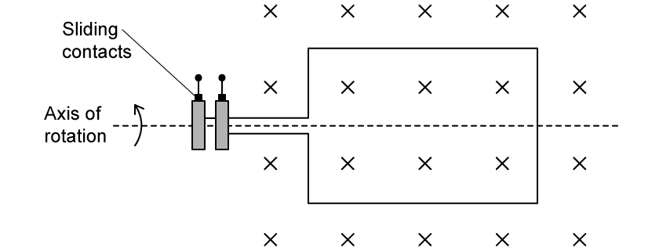
The graph in Fig. 1.1b shows how the output voltage \(V\) from the generator varies with time \(t\).
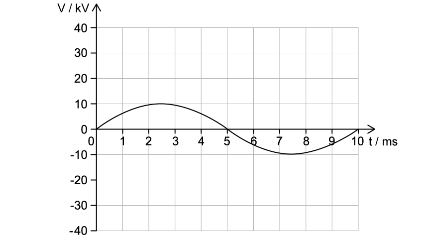
Using Fig. 1.1b, state the peak output voltage \(V_0\) of the generator. [1 mark]
(b) Calculate the root mean squared voltage \(V_{\mathrm{rms}}\). [2 marks]
(c) The mean power output of the generator is \(35\ \mathrm{kW}\).
Calculate the root mean squared current \(I_{\mathrm{rms}}\). [3 marks]
(d) Draw a line on the graph in Fig. 1.1b to show the \(V_{\mathrm{rms}}\). [2 marks]
Show mark scheme / model answer
- (a) Read the amplitude from the graph: \(V_0=10\ \mathrm{kV}\).
[1] - (b) \(V_{\mathrm{rms}}=V_0/\sqrt2=(10\times10^3)/\sqrt2=7.1\times10^3\ \mathrm{V}=7.1\ \mathrm{kV}\).
[2] - (c) Use \(P_{\mathrm{mean}}=I_{\mathrm{rms}}V_{\mathrm{rms}}\). Hence \(I_{\mathrm{rms}}=(35\times10^3)/(7.1\times10^3)=4.9\ \mathrm{A}\).
[3] - (d) Draw a straight horizontal line at \(+7.1\ \mathrm{kV}\) and label it \(V_{\mathrm{rms}}\).
[2]
Example 3 · Rectification, smoothing and bridge-current paths · 21.1 SQ Easy Q3
(a) In rectification, a smoothing capacitor is often necessary.
State the meaning of
(i) rectification, [1]
(ii) smoothing. [1]
[2 marks]
(b) Fig. 1.1a shows the voltage output from an alternating current supply.
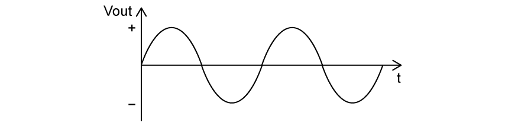
Sketch the variation of time with output voltage during
(i) half-wave rectification on Fig. 1.1b [2]

(ii) full-wave rectification on Fig. 1.1c [2]
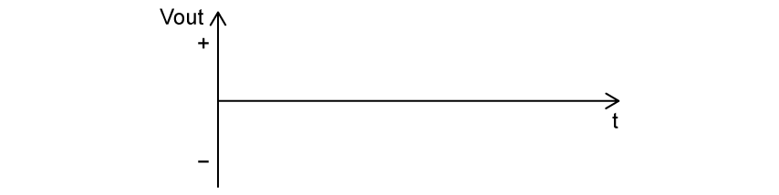
[4 marks]
(c) A capacitor is placed in parallel with a resistive load to smooth the rectified voltage. The graph of the smoothed output voltage against time gives a ‘ripple’ shape as shown in Fig. 1.2.
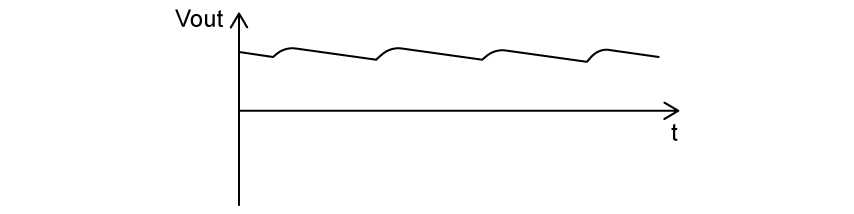
State how the ‘ripples’ in the graph can be reduced. [2 marks]
(d) Fig. 1.3a shows a diode bridge circuit. It is designed to allow current to flow in certain pathways depending on the input direction of the current.
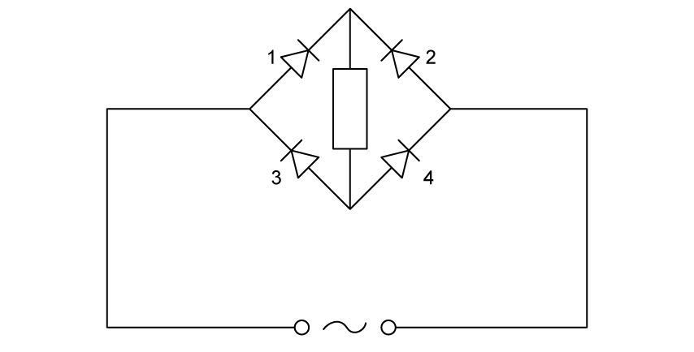
Draw the path of the current
(i) on Fig. 1.3b [1]
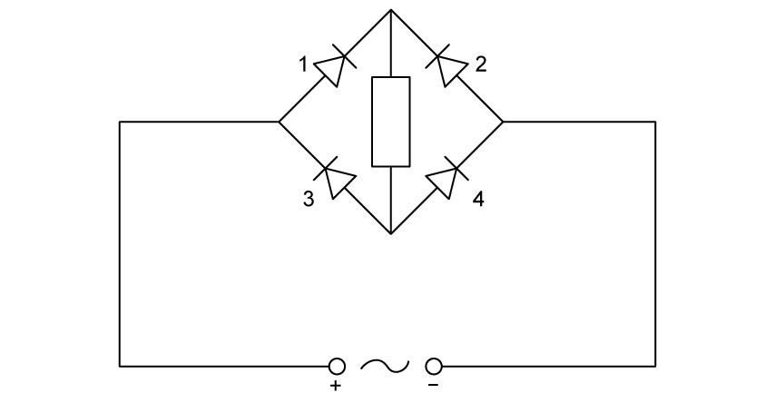
(ii) on Fig. 1.3c [1]
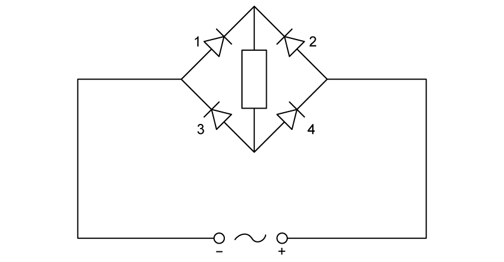
[2 marks]
Show mark scheme / model answer
- (a)(i) Rectification is the conversion of a.c. into d.c.
[1] - (a)(ii) Smoothing is the reduction in variation of the output current or voltage.
[1] - (b)(i) Draw equal positive half-sine pulses and a zero output throughout every negative half-cycle.
[2] - (b)(ii) Reflect every negative half-cycle above the time axis, giving equal positive half-sine pulses with no missing half-cycles.
[2] - (c) Use a capacitor with greater capacitance
[1]and a load resistor with greater resistance.[1] - (d)(i) With the left input positive, current passes through diodes 1 and 4 only and through the load from top to bottom.
[1] - (d)(ii) With the right input positive, current passes through diodes 2 and 3 only and still through the load from top to bottom.
[1]
21.1 Properties and Uses of Alternating Current — Medium
Example 4 · Completing a bridge rectifier and analysing a sinusoidal supply · 21.1 SQ Medium Q1
(a) Alternating current (a.c.) is converted into direct current (d.c.) using a full-wave rectification circuit. Part of the diagram of this circuit is shown in Fig. 1.1.
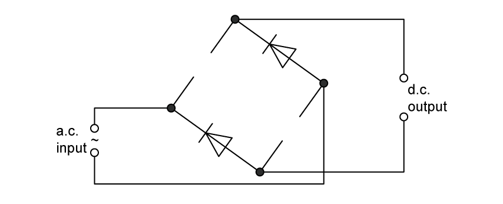
(i) On Fig. 1.1, identify the negative output terminal of the rectifier with a \((-)\). [1]
(ii) Complete the circuit in Fig. 1.1 by adding the necessary components in the gaps. [1]
[2 marks]
(b) The output voltage \(V\) of an a.c. power supply varies sinusoidally with time \(t\) as shown in Fig. 1.2.
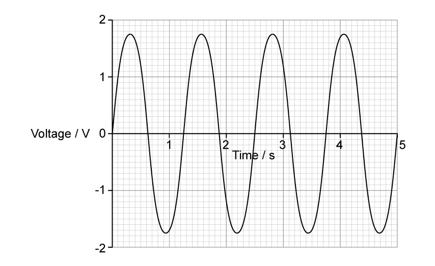
Determine the equation for \(V\) in terms of \(t\), where \(V\) is in volts and \(t\) is in seconds. [2 marks]
(c) The supply is connected to a \(25\ \Omega\) resistor. Calculate the mean power dissipated in the resistor.
\[\text{mean power}=\ ........................................\ \mathrm{W}\]
[2 marks]
Show mark scheme / model answer
- (a)(i) Mark the upper d.c. output terminal as negative.
[1] - (a)(ii) Add one diode in each empty diagonal gap, both oriented diagonally upwards to the right as shown by the existing pair.
[1] - (b) From the graph, \(V_0=1.7\ \mathrm{V}\) and \(T=1.25\ \mathrm{s}\). Thus \(\omega=2\pi/T=5.03\ \mathrm{rad\ s^{-1}}\) and \(V=1.7\sin(5.03t)\).
[2] - (c) \(P_0=V_0^2/R=1.7^2/25=0.116\ \mathrm{W}\)
[1]; \(P_{\mathrm{mean}}=P_0/2=0.058\ \mathrm{W}\).[1]
Example 5 · Full-wave bridge output and capacitor smoothing · 21.1 SQ Medium Q2
(a) Fig. 1.1 shows four diodes and a load resistor of resistance \(2.4\ \mathrm{k\Omega}\), connected in a circuit that is used to produce rectification of an alternating voltage.
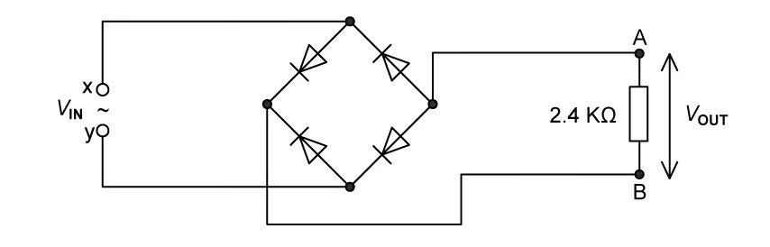
(i) State what is meant by rectification. [1]
(ii) State the type of rectification produced by the circuit in Fig. 1.1. [1]
[2 marks]
(b) A sinusoidal alternating voltage \(V_{\mathrm{IN}}\) is applied across the input terminals X and Y. The variation with time \(t\) of \(V_{\mathrm{IN}}\) is given by the equation
\[V_{\mathrm{IN}}=3.0\sin(20\pi t)\]
where \(V_{\mathrm{IN}}\) is in volts and \(t\) is in seconds.
(i) Label the output terminals A and B, on Fig. 1.1, with the appropriate symbols to indicate the polarity of the output voltage \(V_{\mathrm{OUT}}\). [1]
(ii) The magnitude of the output voltage \(V_{\mathrm{OUT}}\) varies with \(t\) as shown in Fig. 1.2.
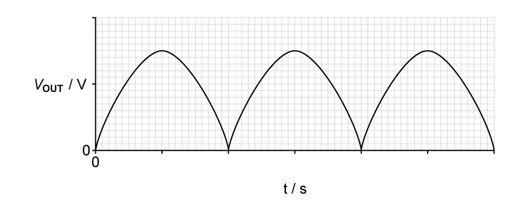
Label both the axes with the correct scales on Fig. 1.2. Use the space below for any working that you need. [4 marks]
(c) The output voltage in (b) is smoothed by adding a capacitor to the circuit in Fig. 1.1.
The difference between the maximum and minimum values of the smoothed output voltage is 15% of the peak voltage.
(i) On Fig. 1.1, draw the circuit symbol for a capacitor showing the capacitor correctly connected into the circuit. [1]
(ii) On Fig. 1.2, sketch the variation with \(t\) of the smoothed output voltage. [2]
[3 marks]
Show mark scheme / model answer
- (a)(i) Rectification is conversion from a.c. to d.c.
[1] - (a)(ii) Full-wave rectification.
[1] - (b)(i) A is negative and B is positive.
[1] - (b)(ii) The vertical maximum is \(3.0\ \mathrm{V}\); suitable labels include \(2\) and \(3\ \mathrm{V}\). Since \(\omega=20\pi\), the input period is \(T=2\pi/\omega=0.10\ \mathrm{s}\) and the full-wave peaks are \(0.050\ \mathrm{s}\) apart. Label the time ticks \(0.025\), \(0.050\), \(0.075\), \(0.100\), \(0.125\) and \(0.150\ \mathrm{s}\).
[4] - (c)(i) Draw a capacitor in parallel with the \(2.4\ \mathrm{k\Omega}\) load resistor.
[1] - (c)(ii) \(15\%\) of \(3.0\ \mathrm{V}\) is \(0.45\ \mathrm{V}\), so each ripple falls from \(3.0\ \mathrm{V}\) to approximately \(2.55\ \mathrm{V}\) before recharging at the next peak. Draw repeated downward-sloping discharge sections joined to the rectified peaks.
[2]
Example 6 · Mean power, power waveform and a piezoelectric crystal · 21.1 SQ Medium Q3
(a) A sinusoidal alternating voltage has a root-mean-square (r.m.s.) potential difference (p.d.) of \(5.1\ \mathrm{V}\) and a frequency of \(40\ \mathrm{Hz}\).
The alternating voltage is applied across a resistor of resistance \(1430\ \Omega\).
Calculate the mean power dissipated by the resistor in mW. [2 marks]
(b) On Fig. 1.1, draw a smooth curve to show how the power \(P\) dissipated in the resistor varies with time \(t\) between \(t=0\) and \(t=100\ \mathrm{ms}\).
Assume that \(P=0\) when \(t=0\).
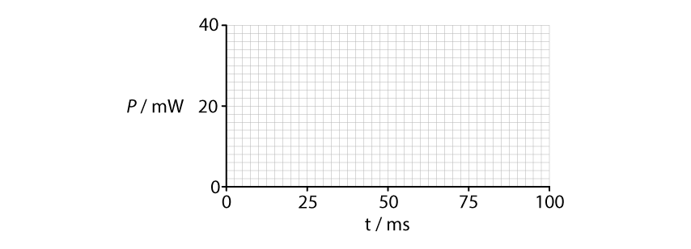
[4 marks]
(c) The alternating voltage in (a) is now applied to a piezoelectric crystal in air.
Explain what happens to the air surrounding the crystal. [3 marks]
Show mark scheme / model answer
- (a) \(P_{\mathrm{mean}}=V_{\mathrm{rms}}^2/R=5.1^2/1430=0.018\ \mathrm{W}=18\ \mathrm{mW}\).
[2] - (b) \(P_0=2P_{\mathrm{mean}}=36\ \mathrm{mW}\).
[1]The PDF model answer shows four positive sinusoidal peaks reaching \(36\ \mathrm{mW}\)[1], with the curve on the time axis[1]and \(P=0\) at \(0\), \(25\), \(50\), \(75\) and \(100\ \mathrm{ms}\).[1] - (c) The alternating p.d. makes the crystal vibrate.
[1]Its vibrations make the surrounding air vibrate.[1]The PDF model answer states that the vibration is in the ultrasound range.[1]
Source check: the original question states \(40\ \mathrm{Hz}\), but the supplied PDF answer calls this ultrasound; these two statements are inconsistent because \(40\ \mathrm{Hz}\) is audible. The power curve supplied in the PDF also follows the \(40\ \mathrm{Hz}\) waveform rather than the expected doubled power frequency. The question wording and the PDF answer have both been retained above.